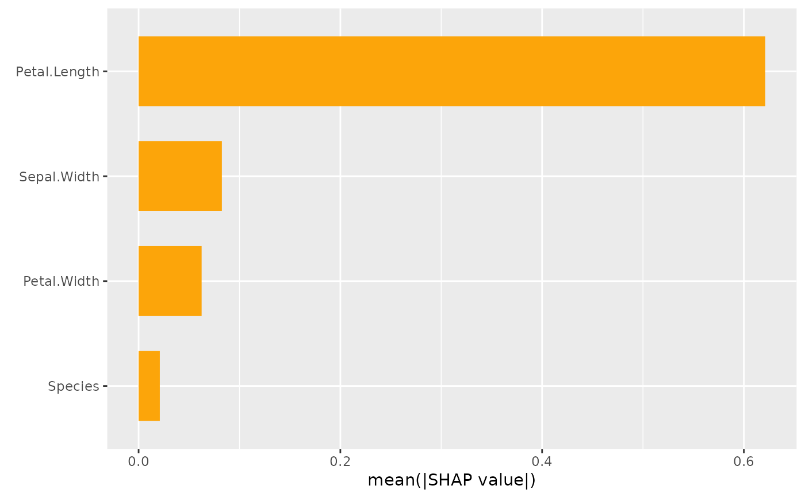
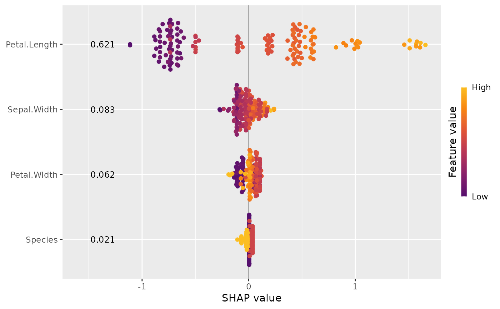

This function provides two types of SHAP importance plots: a bar plot and a beeswarm plot (sometimes called "SHAP summary plot"). The two types of plots can also be combined.
sv_importance(object, ...)
# Default S3 method
sv_importance(object, ...)
# S3 method for class 'shapviz'
sv_importance(
object,
kind = c("bar", "beeswarm", "both", "no"),
max_display = 15L,
fill = "#fca50a",
bar_width = 2/3,
bee_width = 0.4,
bee_adjust = 0.5,
viridis_args = getOption("shapviz.viridis_args"),
color_bar_title = "Feature value",
show_numbers = FALSE,
format_fun = format_max,
number_size = 3.2,
sort_features = TRUE,
...
)
# S3 method for class 'mshapviz'
sv_importance(
object,
kind = c("bar", "beeswarm", "both", "no"),
max_display = 15L,
fill = "#fca50a",
bar_width = 2/3,
bar_type = c("dodge", "stack", "facets", "separate"),
bee_width = 0.4,
bee_adjust = 0.5,
viridis_args = getOption("shapviz.viridis_args"),
color_bar_title = "Feature value",
show_numbers = FALSE,
format_fun = format_max,
number_size = 3.2,
sort_features = TRUE,
...
)An object of class "(m)shapviz".
Arguments passed to ggplot2::geom_bar() (if kind = "bar") or to
ggplot2::geom_point() otherwise. For instance, passing alpha = 0.2 will produce
semi-transparent beeswarms, and setting size = 3 will produce larger dots.
Should a "bar" plot (the default), a "beeswarm" plot, or "both" be shown? Set to "no" in order to suppress plotting. In that case, the sorted SHAP feature importances of all variables are returned.
How many features should be plotted?
Set to Inf to show all features. Has no effect if kind = "no".
Color used to fill the bars (only used if bars are shown).
Relative width of the bars (only used if bars are shown).
Relative width of the beeswarms.
Relative bandwidth adjustment factor used in estimating the density of the beeswarms.
List of viridis color scale arguments. The default points to the
global option shapviz.viridis_args, which corresponds to
list(begin = 0.25, end = 0.85, option = "inferno"). These values are passed to
ggplot2::scale_color_viridis_c(). For example, to switch to standard viridis,
either change the default with options(shapviz.viridis_args = list()) or set
viridis_args = list().
Title of color bar of the beeswarm plot. Set to NULL
to hide the color bar altogether.
Should SHAP feature importances be printed? Default is FALSE.
Function used to format SHAP feature importances
(only if show_numbers = TRUE). To change to scientific notation, use
function(x) = prettyNum(x, scientific = TRUE).
Text size of the numbers (if show_numbers = TRUE).
Should features be sorted or not? The default is TRUE.
For "mshapviz" objects with kind = "bar": How should bars be
represented? The default is "dodge" for dodged bars. Other options are "stack",
"wrap", or "separate" (via "patchwork"). Note that "separate" is currently
the only option that supports show_numbers = TRUE.
A "ggplot" (or "patchwork") object representing an importance plot, or - if
kind = "no" - a named numeric vector of sorted SHAP feature importances
(or a matrix in case of an object of class "mshapviz").
The bar plot shows SHAP feature importances, calculated as the average absolute SHAP
value per feature. The beeswarm plot displays SHAP values per feature, using min-max
scaled feature values on the color axis. Non-numeric features are transformed
to numeric by calling data.matrix() first. For both types of plots, the features
are sorted in decreasing order of importance.
sv_importance(default): Default method.
sv_importance(shapviz): SHAP importance plot for an object of class "shapviz".
sv_importance(mshapviz): SHAP importance plot for an object of class "mshapviz".
X_train <- data.matrix(iris[, -1])
dtrain <- xgboost::xgb.DMatrix(X_train, label = iris[, 1], nthread = 1)
fit <- xgboost::xgb.train(data = dtrain, nrounds = 10, nthread = 1)
x <- shapviz(fit, X_pred = X_train)
sv_importance(x)

sv_importance(x, kind = "no")
#> Petal.Length Sepal.Width Petal.Width Species
#> 0.62123659 0.08254966 0.06248401 0.02103343
sv_importance(x, kind = "beeswarm", show_numbers = TRUE)
